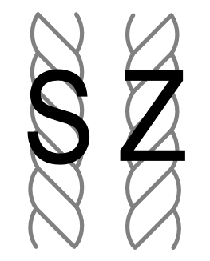

Garen zijn gesponnen draden. De draden kunnen op verschillende manieren gesponnen worden. Het kan (ouderwets) op een spinnenwiel, maar de meeste fabrieken gebruiken er machines voor. Meestal geven machines gelijkmatigere garen dan met de hand gesponnen garen. En natuurlijk zijn ze vele malen sneller. Meestal zijn deze draden rechtsom gedraaid, dit heet S-twist.
Nadat de draden gesponnen zijn, worden er vaak meerdere van deze gesponnen draden samen getwijnd. Door meerdere draden samen te twijnen wordt het garen sterker en dikker. Ook is het vaak makkelijker werken met getwijnd garen. Garen kan op twee manieren getwijnd worden. Het meeste garen wordt linksom getwijnd met rechtsom gedraaide draden. Op deze manier krijg je een gebalanceerd garen. Dit heet Z-twist garen.
 Hier kun je lezen wat je allemaal kunt doen met garen.
Hier kun je lezen wat je allemaal kunt doen met garen.